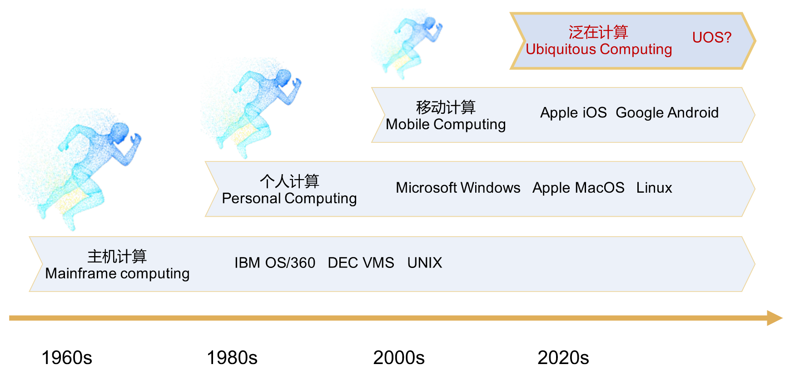

翔云创新团队 FlyAir Innovation Lab

|
访问翔云主页：https://flyair2.gitee.io/ 翔云创新团队由本人领衔，依托浙江大学嘉兴研究院，聚焦高安全操作系统、机载计算平台、无人机系统等研发工作，团队成员包括毕业于北京航空航天大学、南洋理工大学、华中科技大学、大连理工大学等顶尖高校的博士、硕士和本科生，在操作系统、无人机研发等领域具备雄厚的研究基础和丰富的工程经验。 |

|
|
TPChina定理证明开放社区 TPChina Theorem Proving Open Community

|
访问TPChina主页：https://tpchina.github.io/ TPChina由本人和上海交通大学曹钦翔、中国科学院软件研究所詹博华等学者共同发起成立。TPChina是国内定理证明爱好者、学者、研究人员的交流平台。开放社区会定期组织线上、线下活动，供各社区成员交流在定理证明领域的经验、收获和新成果，社区也会邀请学者向社区成员介绍相关领域的新突破、新理论、新工具、新动向。TPChina收集了Coq、Isabelle、Lean等定理证明工具的入门资料，定理证明项目信息与检索，以及相关学术论文的索引。 |
矽望泛在操作系统社区 SYSWONDER Ubiquitous Operating System Community
|
访问矽望社区主页：https://syswonder.org/ 矽望是一个开源社区，由一群系统软件爱好者自发形成，致力于探索和构建适合特定泛在应用场景的新形态操作系统。在当前阶段，主要目标是针对实时非实时任务混合运行的边缘计算场景，如医疗设备、车辆控制、工业控制、无人系统等领域，面向非对称多处理器SoC（MCU， CPU， DSP等）新型硬件平台对现有操作系统管理机制带来的挑战，在操作系统架构和实现机制上尝试创新。 本人作为矽望开源技术委员会委员之一，致力于新型操作系统技术的研究与应用推广工作。 |
|
|  | |